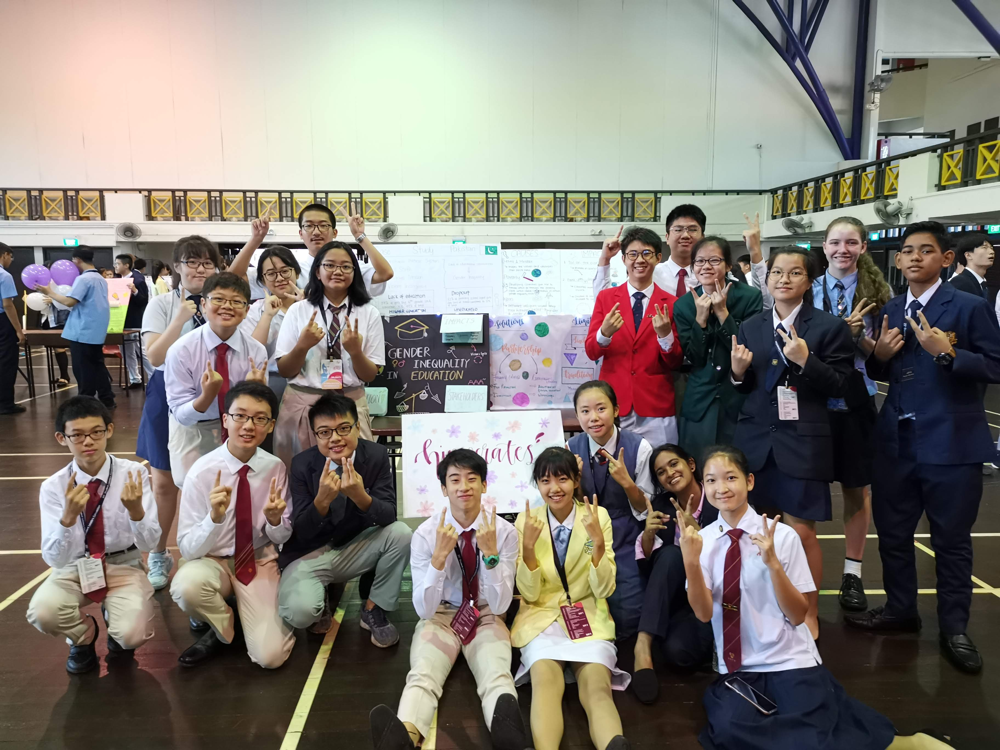

Youth Faculty 12: Gender Inequality
Under Youth Assembly 4: Education in Developing Countries
Hello! We are Youth Faculty 12, and the issue we are discussing is gender inequality. In developing countries where access to education is not equally spread between both genders, most of the time, benefits of education are given to the males. As males are often seen as the main breadwinner of the family, it is a societal norm that the opportunity to receive education is given to the male instead of the female, and females are thus deprived of the chance to receive education. In developing countries, women are traditionally valued for their domestic work and fertility, it can be difficult for families to see investment in girls’ formal education as beneficial, and they may decide that marriage is a better option. Therefore most of people do not understand the importance of education for females. Gender stereotypes, sociocultural norms, and inequity of power dynamics between the sexes are also part of the many factors contributing to gender inequality in education.
Sitting in the same classroom, reading the same textbook, listening to the same teacher, boys and girls receives very different educations. They are treated very differently and the way teachers or fellow students view their level of competency is also drastically different. Teachers socialize girls towards a feminine ideal. Girls are praised for being neat, quiet, and calm, whereas boys are encouraged to think independently, be active and speak up. Females are also seen as not as competent as males, even if they produce the same results as them. Teachers have the false idea that males are naturally more academically inclined than females, and females have to do much better than males to be seen as their mere equal. However, females are not the sole target for discrimination. Males are also subjected to some form of discrimination. Males generally have higher expectations from their teachers and more likely to get disciplined than girls.
Some of the solutions are possible partnerships between the government and the NGOs. The solution includes a curriculum change and gender education workshops, which aims to raise awareness for gender equality at a very young age and break the cycle of gender roles. There will also be incentives and funding in developing countries, and this will be done through lowering the fee of education for girls and funding for schools in economically backward areas. This curriculum change will better target the problem of gender inequality. Teaching at a young age can more easily influence the child to stop having gender roles. Meanwhile this solution also teaches the parents about gender inequality. This solution would allow for a change in the mindset of the parents and so they would allow their daughters to go to school.
The Lens
This video is a mixture of interview and skit and we aim to express the problems of gender inequality through the eyes of the stakeholders. Lets find out more through this video. Enjoy! Link to slides: here
Exhibition
Our exhibition covers the causes, impacts, solutions, stakeholders and case studies about gender inequality. As with all solutions, there are limitations to them and our exhibition showcases them too. We did not only utilized raw content to showcase our thoughts and insights, but aesthetic presentation as well. The colours of the boards symbolises the number of girls and boys that goes to school in developing countries, with black representing the girls and white, the boys. This shows the stark contrast as the number of boys going to school far exceeds that of the girls. However, there is hope for change. As the light shines on top of two boards, those 2 represents the ideal situation where there is an equal chance for both boys and girls to go to school. The light may be dimly lit, but it will light the pathway to a world where gender shall not affect the education one receives, in a world where gender inequality does not exist. It is a fleeting dream, but step by step, it can be achieved, together.
THANK YOU
“No amount of poetic flourish or complex words can contain how much you guys have changed my extremely monotonous life. And I’m extremely grateful. And though we are separated by lands and seas, I can still feel a sense of magic between us. And I’m sure it’ll never fade.” - Ruth from yf12
“I can not describe how amazing you guys are with words, I really enjoyed every moment together with YALL no matter whether we are working together on the boards or having fun after dinner.” - Shi Ji from yf12